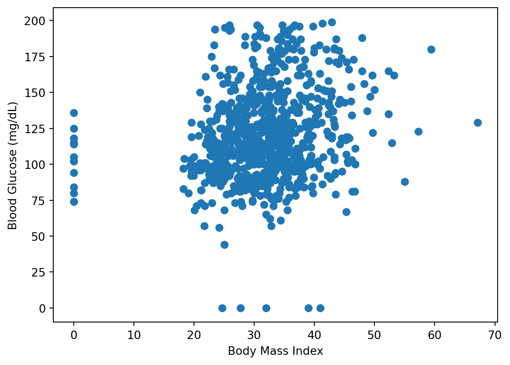
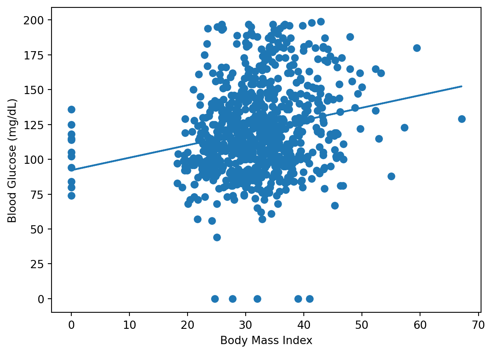
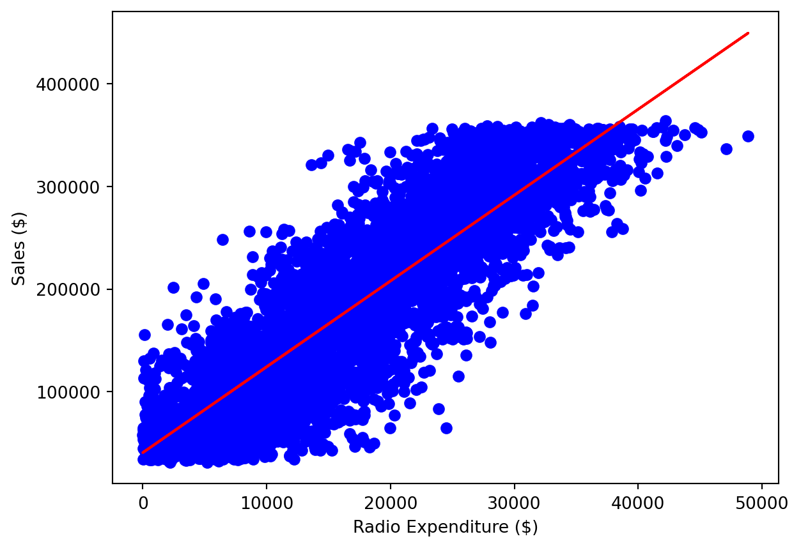

En este capítulo , te introducirás en la regresión y construirás modelos para predecir los valores de las ventas utilizando un conjunto de datos sobre gastos publicitarios. Aprenderás la mecánica de la regresión lineal y las métricas de rendimiento más comunes,como r_squared y error cuadrático medio. Realizarás la validación cruzada k-fold y aplicarás la regularización a los modelos de regresión para reducir el riesgo de sobreajuste.
Introducción a la regresión
Predicción de niveles de glucosa
import pandas as pdruta ='./data/Diabetes Clean Data.csv'diabetes_df = pd.read_csv(ruta)diabetes_df.head()
pregnancies
glucose
diastolic
triceps
insulin
bmi
dpf
age
diabetes
0
6
148
72
35
0
33.6
0.627
50
1
1
1
85
66
29
0
26.6
0.351
31
0
2
8
183
64
0
0
23.3
0.672
32
1
3
1
89
66
23
94
28.1
0.167
21
0
4
0
137
40
35
168
43.1
2.288
33
1
Creación de matrices de características y objetivos
X = diabetes_df.drop('glucose', axis=1).valuesy = diabetes_df['glucose'].valuesprint(type(X), type(y))
<class 'numpy.ndarray'> <class 'numpy.ndarray'>
Predicciones a partir de una única característica
X_bmi = X[:, 4]print(y.shape, X_bmi.shape)
(768,) (768,)
X_bmi = X_bmi.reshape(-1, 1) # necesario para poder usarlo en scikit learnprint(X_bmi.shape)
(768, 1)
Representación gráfica de la glucosa frente al índice de masa corporal
import matplotlib.pyplot as pltplt.scatter(X_bmi, y)plt.ylabel('Blood Glucose (mg/dL)')plt.xlabel('Body Mass Index')plt.show()

Ajuste de un modelo de regresión
from sklearn.linear_model import LinearRegressionreg = LinearRegression()reg.fit(X_bmi, y)predictions = reg.predict(X_bmi)plt.scatter(X_bmi, y)plt.plot(X_bmi, predictions)plt.ylabel('Blood Glucose (mg/dL)')plt.xlabel('Body Mass Index')plt.show()

Crear características
En este capítulo, trabajarás con un conjunto de datos llamado sales_df, que contine información sobre el gasto en camapañas publicitarias en distintos tipos de medios y el número de dólares generados en ventas por la campaña respectiva. Aquí tienes las dos primeras filas:
tv
radio
social_media
sales
0
16000.0
6566.23
2907.98
54732.76
1
13000.0
9237.76
2409.57
46677.90
Utilizarás los gastos de publicidad como características para predecir los valores de las ventas, trabajando inicialmente con la columna "radio". Sin embargo, antes de hacer ninguna predicción, tendrás que crear la matriz de características y objetivos, dándoles el formato correcto para scikit-learn.
Instrucciones
Crea X, una matriz con los valores de la columna "radio" del DataFrame sales_df.
Crea y, una matriz con los valores de la columna "sales" del DataFrame sales_df.
Remodela X en una matriz Numpy bidimensional.
Imprime la forma de X y y.
import numpy as np# Create X from de radio column's valuesX = sales_df['radio'].values# Create y from de sales column's valuesy = sales_df['sales'].values# Reshape XX = X.reshape(-1, 1)# Check the shape of the features and targetsprint(X.shape, y.shape)
(4546, 1) (4546,)
Construye un modelo de regresión lineal
Ahora que has creado tus matrices de características y objetivos, entrenaras un modelo de regresión lineal en todos los valores de características y objetivos.
Como el objetivo es evaluar la relación entre la característica y los valores objetivo, no es necesario dividir los datos en conjuntos de entrenamiento y prueba.
X y y se han precargado de la siguiente manera
y = sales_df['sales'].valuesX = sales_df['radio'].values.reshape(-1, 1)
Instrucciones
Importa LinearRegression.
Instancia un modelo de regresión lineal.
Predice los valores de venta utilizando X, almacenando como predictions.
# Import LinearRegressionfrom sklearn.linear_model import LinearRegression# Create the modelreg = LinearRegression()# Fit the model to the datareg.fit(X, y)# Make predictionspredictions = reg.predict(X)print(predictions[:5])
Se observa cómo los valores de la ventas para las primeras cinco predcciones varían de $95.000 a mas de $290.000.
Visualizar un modelo de regresión lineal
Ahora que has construído el modelo de regresión lineal y lo has entrenado utilizando todas las observaciones disponibles, puedes visualizar lo bien que se ajusta el modelo a los datos. Esto te permite interpretar la relación entre el gasto en publicidad de radio y los valores de sales.
Instrucciones
Importa matplotlib.pyplot como plt.
Crea un gráfico de dispersión visualizando y frente a X, con las observaciones en azul.
Visualiza el gráfico.
# Import matplotlib.pyplotimport matplotlib.pyplot as plt# Create a scatter plotplt.scatter(X, y, color='blue')# Create line plotplt.plot(X, predictions, color='red')plt.xlabel('Radio Expenditure ($)')plt.ylabel('Sales ($)')# Display the plotplt.show()

¡El modelo captura muy bien una correlación lineal casi perfecta entre el gasto en publicidad en radio y las ventas!
Conceptos básicos de la regresión lineal
Mecánica de regresión
\[ y = ax + b \]
La regresión lineal simple utiliza una característica
y = objetivo
x = una característica
a, b =. parámetros/coeficientes del modelo - pendiente, intercepto.
¿Cómo elegimos a y b?
Se define una función de error para cualquier línea dada
Se elige la línea que minimice la función de error
Función de error = función de pérdida = función de coste